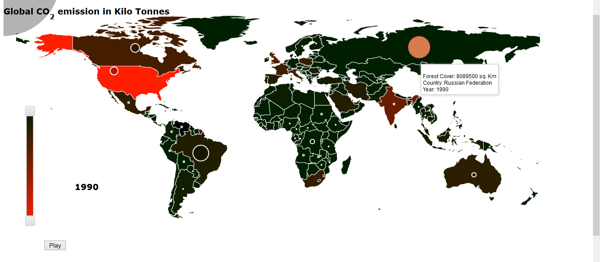
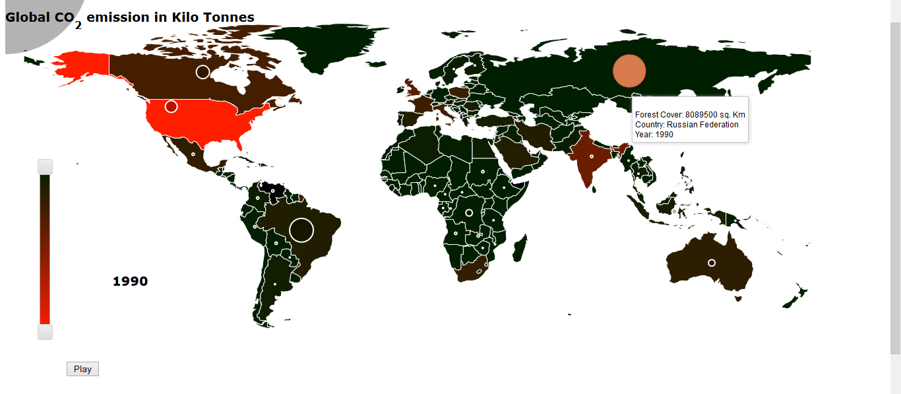

Climate Change and Global Warming
Data Visualization
This was a data visualization proposal. The idea was to visualize on a world map how much CO2 each country has emitted in Kilo tones over the years (from 1960 to 2010) and also display the forest cover and how much it has reduced over the years and attribute these changes to change in temperature. The user can explore the data by interacting with the visualization. The visualization would be implemented using animations and color coding to denote temperatures and CO2 emissions.
Data: World bank provides free and open access to data about development in countries around the globe.
 

Interactions
The choropleth map is shaded depending on the CO2 emission of different countries. Orange depicts more emission, green depicts less emission. The horizontal slider allows user to change the year and the vertical slider allows user to filter the data and it is a legend of the map as well. When user clicks on a country he would be able to view a line graph showing the trend over the years; hovering the mouse displays the country name. Scrolling the mouse will allow the user to zoom in and out. Checkboxes and dropdowns will allow user to compare CO2 emissions with change in forest area and change in temperature.
Interesting Insights
- A direct link between high emission and deforestation and climate change (increase in temperature) is noticeable; some countries with high CO2 emission but high forest area may not display increase in temperature over a few years.
- Temperature seems to rise exponentially over the years.
- Alarming rates of deforestation over the years can be noticed.